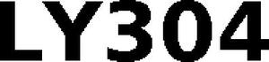

Trade Mark Journal No.2025/040 3 October 2025
WO0000001876326 (9,18,25,28)
Office of origin: European Union Intellectual Property Office (EUIPO)
Date of International Registration:1 August 2025
Date of designation in the UK:
1 August 2025

International priority date claimed: 4 February 2025
(European Union Intellectual Property Office (EUIPO))
(019111783)
- Class 9
- Helmets for use in sports; cycling helmets; protective helmets for sports; warning streamers; sunglasses; goggles for cyclists; eyewear; optical correcting and magnifying apparatus; goggles for sports; swimming masks; swimming goggles; cellular telephone cords; straps for sunglasses; diving equipment; pedometers; headphones [headsets]; cases for telephones; apparatus and instruments for navigation, orientation, tracking and mapping; data storage media; audiovisual and information technology equipment; smart watches; protective masks other than for medical use; anti-contamination masks for respiratory protection; image transmitting apparatus; folding covers for electronic tablets; surveying apparatus and instruments; holders adapted for mobile telephones; calculators; holders adapted for electronic tablets; hands-free holders for mobile phones; software; apparatus and instruments for verification (supervision); apparatus and instruments for controlling electric current; wireless headphones; data transmission cables; earphones for mobile phones; weighing apparatus and instruments; leather covers for mobile telephones; leather covers for tablets; mobile telephone cords; interactive computer programs; interactive video game programs; interactive computer programs; interactive game software; secondary lithium batteries; media for dashboard navigation devices; spectacle cases; carrying cases adapted for mobile phones; magnetic recording media, sound recording disks; covers for cameras; covers for e-book readers; signaling apparatus and instruments; computers; cash registers; sound reproduction apparatus; sound transmission apparatus; loudspeakers; USB cables; measuring apparatus and instruments; apparatus and instruments for switching electricity; battery chargers; wireless chargers; apparatus and instruments for accumulating electricity; apparatus and instruments for accumulating electricity; mechanisms for coin-operated apparatus; computer housings; cases for electronic tablets; casings for smartphones; sound recording apparatus; rechargeable electric batteries; life-saving apparatus and instruments; fabric or textile covers for mobile telephones; apparatus and instruments for conducting electricity; portable video cameras with built-in video recorders; USB flash drives; photographic apparatus and instruments; fire extinguishers; nautical apparatus and instruments; apparatus for recording images; telephone covers [specifically adapted]; apparatus and instruments for regulating electricity; data processing equipment; optical apparatus and instruments; covers for mobile telephones; leather covers for smartphones; selfie sticks used as smartphone accessories; apparatus for reproducing images; housings for cameras; computer mouse pads; computer mice.
- Class 18
- Backpacks; briefcases [leather goods]; school bags; attaché cases; cases of leather or leather board; garment bags for travel; bags for carrying clothing; sports bags; hip bags; shoulder bags; suitcases; suitcase handles; net bags for shopping; footwear bags; travel cases; trunks and suitcases; wheeled backpacks; bags for climbers; bags for campers; all-purpose sports bags; carry-on bags; hiking rucksacks; wallets; umbrellas; haversacks; sunshades.
- Class 25
- Clothing; footwear; headwear; button-down shirts; polo shirts; upper-body clothing for babies; thermal vests; outdoor weather-resistant clothing; clothing (garments); bandanas [neckerchiefs]; scarves; caps [headwear]; bath sandals; caps and sports caps; woolly hats; bathrobes; swimsuits; underwear; hoods [clothing]; shawls; belts [clothing]; neckties; corsets; fur stoles; foulards; caps; gloves [clothing]; raincoats; stockings; socks; leggings [leg warmers]; Ascots; pajamas; suspenders; mittens; ear muffs; inner soles; bow ties; pareus; dress shields; sundresses; sun visors; sock suspenders; stocking suspenders; tights; leotards; wooden shoes; coats; sports jackets; down jackets; slippers; sneakers; underpants; dresses; clothing for gymnastics; gymnastic shoes; gabardines; top coats; skirts; slippers; leather dresses; slips [undergarments]; stuff jackets; jackets; vests; T-shirts; headbands; shirts; boxer briefs; half-boots; boots; blouses; non-slip devices for footwear; esparto shoes or sandals; knitwear [clothing]; anoraks; parkas; sports jerseys; sportswear; exercise clothing; wristbands.
- Class 28
- Sports training apparatus; appliances for gymnastics; soccer balls; barbells; football ball bags; masks for sports; marker cones for sports; sports equipment; soccer equipment; football gloves; weights for exercising; paintball guns; football goals; padded protectors [parts of sports suits]; football goal nets; football knee pads; barbell stands; toy sports products; balls for games; reduced-size footballs; dolls; games; electronic games.
L.Y. SPORTS MANAGEMENT, S.L.
Representative: UNGRIA PATENTES Y MARCAS, S.A., Av. Ramón y Cajal, 78, E-28043 Madrid, SPAIN